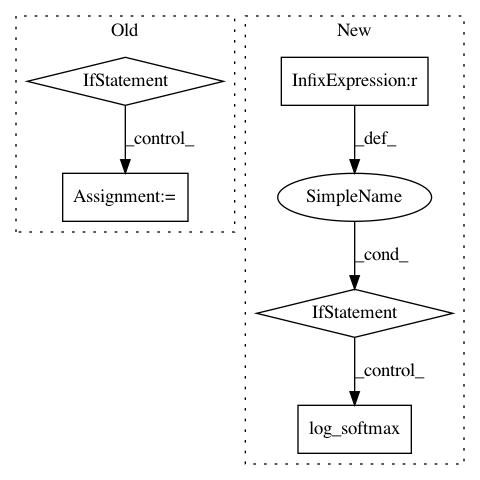

927d2b319bc7a6c31c63ad64e6124477c2a5b583,examples/pytorch/ogb/ogbn-products/graphsage/main.py,SAGE,inference,#SAGE#Any#Any#Any#Any#,56
Before Change
h = x[input_nodes].to(device)
h_dst = h[:block.number_of_dst_nodes()]
h = layer(block, (h, h_dst))
if l != len(self.layers) - 1:
h = self.activation(h)
h = self.dropout(h)
y[output_nodes] = h.cpu()
x = y
return y
After Change
return (th.argmax(pred, dim=1) == labels).float().sum() / len(pred)
def evaluate(model, g, nfeat, labels, val_nid, test_nid, device):
Evaluate the model on the validation set specified by ``val_mask``.
g : The entire graph.
inputs : The features of all the nodes.
labels : The labels of all the nodes.
val_mask : A 0-1 mask indicating which nodes do we actually compute the accuracy for.
device : The GPU device to evaluate on.
model.eval()
In pattern: SUPERPATTERN
Frequency: 3
Non-data size: 5
Instances
Project Name: dmlc/dgl
Commit Name: 927d2b319bc7a6c31c63ad64e6124477c2a5b583
Time: 2020-12-28
Author: mufeili1996@gmail.com
File Name: examples/pytorch/ogb/ogbn-products/graphsage/main.py
Class Name: SAGE
Method Name: inference
Project Name: pyannote/pyannote-audio
Commit Name: 94b472f63d03fca865038f0e6ebe263e55862b5d
Time: 2018-12-18
Author: bredin@limsi.fr
File Name: pyannote/audio/labeling/models.py
Class Name: StackedRNN
Method Name: forward
Project Name: dpressel/mead-baseline
Commit Name: 1fd1fbb4b677f10d8e2181e7176daabad7327a72
Time: 2018-11-19
Author: blester125@users.noreply.github.com
File Name: python/baseline/pytorch/tagger/model.py
Class Name: TaggerModelBase
Method Name: create